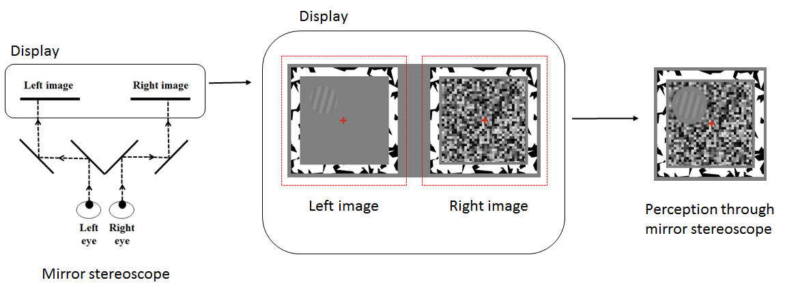
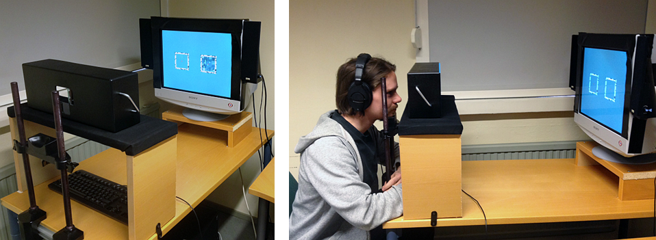
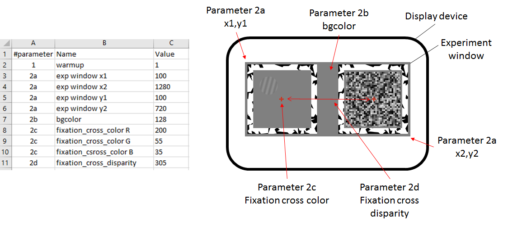
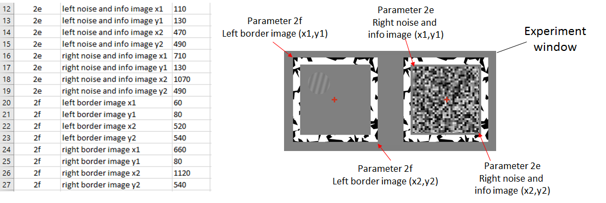
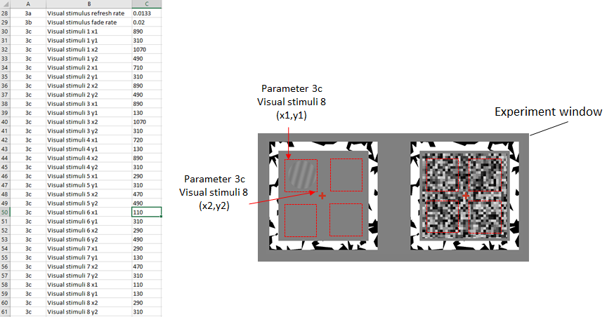
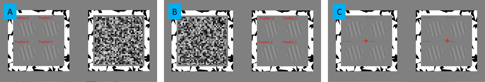
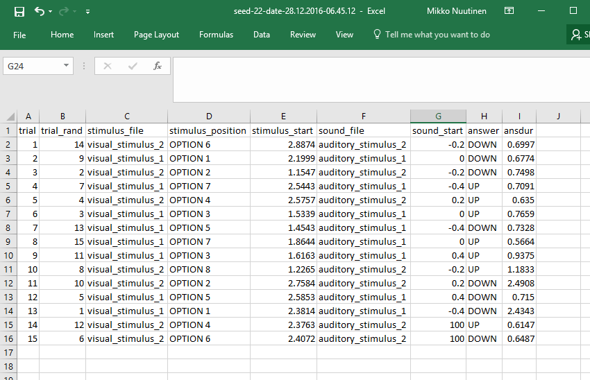

The CFS toolbox requires the installation of MATLAB or GNU/Octave and Psychtoolbox-3. Psychtoolbox-3 is a set of functions for experimental psychology research that runs on multiple platforms (Windows, Mac, Linux) and that makes it easy to present accurately controlled visual and auditory stimuli. The CFS toolbox has been tested under Windows 7 with MATLAB R2014a and Linux Ubuntu 15.04 with GNU/Octave 4.0. The toolbox versions for both environments are available from the project page. It should be noted that in this version of the CFS toolbox for Linux Ubuntu with the GNU/Octave auditory stimuli are disabled. The problem is expected to be fixed in future versions of the toolbox.
The CFS toolbox draws and plays visual and auditory stimuli using the functions of Screen and PsychPortAudio in Psychtoolbox-3. Screen is a function for precise control of the video display. PsychPortAudio contains a set of parameters for working with sounds. The functionality requires a suitable graphic and audio cards and computer. It is recommended that the user refers to the Psychtoolbox-3 documentation for up-to-date details.
In our laboratory setup (see Figure 2), stimuli are viewed through a mirror stereoscope with mounted chin and head rests. A mirror stereoscope presents the stimulus in the right half of the display exclusively to the right eye and the stimulus in the left half of the display exclusively to the left eye (see Figure 1). Some scholars have used a setup, in which two displays that are set opposite to each other, project stimulus to the left and right eye respectively via two mirrors.
Figure 1. Mirror stereoscope presents the stimulus in the right half of the display exclusively to the right eye and the stimulus in the left half of the display exclusively to the left eye.
Figure 2. Photography of the test setup system in our laboratory (mirror stereoscope, chin and head rest and display)
The primary interface to the CFS toolbox are the stimulus parameters (stimulus_parameters.csv) and trial parameters (trial_parameters.csv) files. The CFS toolbox reads the parameter files and run experiment according to the parameters. The stimulus parameters file contains parameters for the whole experiment setup. The trial parameters file contains a sorted list of definitions for each trial. The parameter values in the both files can be changed, although the structure of the files must be preserved when saving.
The stimulus parameters define the location and size of experiment window and the options for all experiment elements. The CFS toolbox draws all experiment elements, such as border frames, noise pattern and visual stimuli, inside experiment window. That is, the coordinate space of experiment window is used for defining the locations and sizes of experiment elements, whereas experiment window uses the coordinate space of display device. Figure 3 shows how the parameters of experiment window are set. Figure 4 shows how the parameters of experiment elements are set.
Figure 3. The coordinates and properties of experiment window are set by the parameters 2a – 2d of the stimulus parameters file
Figure 4. The coordinates of border and noise images are set by the parameters 2e and 2f
It is possible to set eight different location options for visual stimulus. Visual stimulus can be selected to be displayed e.g. on the different corners, up or down or center or any eight free positions on experiment window. The principle is that coordinate options are recorded in the stimuli parameters file from which trial specific values are selected for each trial according to the trial parameters file. Figure 5 shows an example experiment window in which red squares are eight location options in this setup that can be selected for different trials by the trial parameter file.
OBS. It should be noted that the CFS toolbox shows left noise image when the visual target is presented in positions 1, 2, 3 or 4. The right noise image is, respectively, showed when the position of visual target is 5, 6, 7 or 8.
Figure 5. The location options for the visual targets are set by the parameter 3c.
Each row of the trial parameters file defines the presentation of visual and auditory stimulus for one trial. The number of rows defines the number of trials. Each trial is defined by the four parameters: (1) the type of visual stimulus (image file), (2) the location of visual stimulus, (3) the type of audio stimulus (audio file) and (4) the timing of audio stimulus:
Figure 6. An example trial (row 3) as a function of time
The "test_settings.m" function displays the location and size of experiment window and all elements (such as noise, visual targets and border frames) inside it (Figure 7). This enables the user to ensure that all targets are displaying correctly (e.g., in the correct location on the monitor relative to the mirror stereoscope). It is recommeded to run the function before new experiment.
Figure 7. Test settings function displays eight spatial locations for visual targets set by the stimulus parameters file with the noise (A and B) and without (C)
Once the experiment has been specified in the parameter files, it can be run from the MATLAB command window by calling the function “run_experiment”. This function reads the parameter files and runs the experiment. The demo video “run_experiment_demo.mp4” is a screen capture in which the actual experiment has been run. For the video, we used a screen keyboard for clarifying the keys that are used for controlling the user interface of the experiment setup. It can be noted that "return" and "space" keys are used when moving from the infograph display to the trials and "up" and "down" arrow keys are used to record the responds of trials. A new trial is always started by pressing the "space" key.
After all trials defined in the trial parameters file have been run, experiment specific result file is saved to the result director. Result files are named as "seedID-date-dd.mm.yyyy-hh.mm.ss.txt", in which 'ID' is participant identification number, 'dd.mm.yyyy' is the date and 'hh.mm.ss' the exact time when the experiment was finished.
Figure 7 shows example result file opened in Excel. The first row of the file shows that the trial parameters were selected from the row 14 of the trial parameters file (column: trial_rand). That is, the order of the trials was randomized. The visual stimulus of the first trial was the image file "visual_stimulus_2.png" (column: visual_stimulus_file), which was triggered 2.8874 second after noise (column: stimulus_start). The position of the visual stimulus was the location coded in the option 6. The audio file of the first trial was "auditory_stimulus_2.wav" (column: audio_file). In this trial the audio was played 0.2 second before the visual stimulus (column: audio_start = -0.2). The column of answer shows that the observer pressed the "down" button.
OBS. The sound_start values in the trials 14 and 15 is 100 seconds. In a that way, by setting audio start time long enough, audio can be muted for the specific trials.
Figure 7. Screen shot of result file opened in Excel